モアイくん
助っ人 · Lv1／最大Lv1
おこていゆについてまわる、思い入れのあるおもちゃ。戦闘では、最初に受けるダメージを、気の技でも前に出て吸収します。黄色い光をまとい、1秒待ってから、攻撃した相手へ力をお返しします。その後はおこていゆの後ろで見守ってくれます。
備えを変えると、冒険の手ざわりも少し変わります。
現在のWebベータ版では、サポートもちもの4種・防御もちもの3種を最初から所持しています。「サポート」と「助っ人」を合わせて4つまで選べます。防御もちものは別に1つです。現在のサポートもちものは、すべてLv1・最大Lv1です。
助っ人 · Lv1／最大Lv1
おこていゆについてまわる、思い入れのあるおもちゃ。戦闘では、最初に受けるダメージを、気の技でも前に出て吸収します。黄色い光をまとい、1秒待ってから、攻撃した相手へ力をお返しします。その後はおこていゆの後ろで見守ってくれます。

助っ人 · Lv1／最大Lv1
薄い緑色の、モアイくんと同じ形の助っ人。戦闘ではおこていゆの後ろで見守り、HPが残ったまま半分以下になると、一戦に一度だけ最大HPの30%を回復します。その後も後ろで待機します。
一撃でHPが0になった場合は回復しません。スーパーおこていゆ状態の自動発動と回復の条件を一緒に満たしたときは、両方が発動します。新規ゲームではモアイくんと一緒に選択済みです。
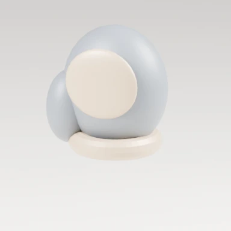
サポート · Lv1／最大Lv1
小さな手に合う、かたいグローブ。選んでおくと、相手に与えるダメージを高めます。戦闘ビューには姿を表示しない「サポート」です。
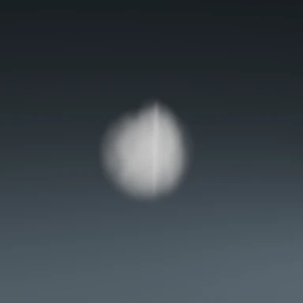
サポート · Lv1／最大Lv1
ぼんやり白く光る気の塊。選んでおくと、基礎的な力を幅広く支えます。戦闘ビューには姿を表示しない「サポート」です。
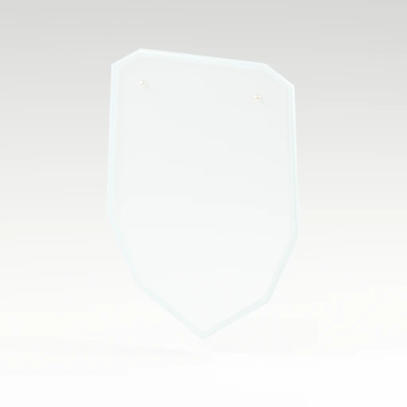
透明な板の盾。戦闘では体の前に浮かび、受けるダメージをやわらげます。
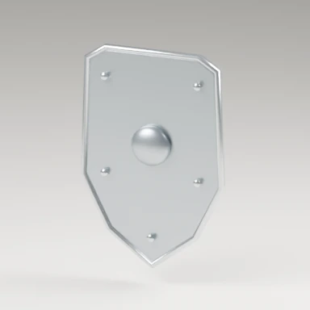
重厚な鉄の盾。守りに優れますが、その重さで動きは少し重くなります。
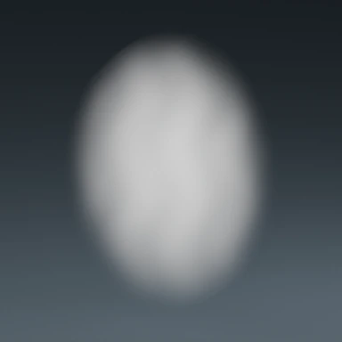
白いモヤのような盾。受けるダメージを抑えながら、攻撃も後押しします。
相手の珍生物をすべて疲れさせて戦闘を終えると、戦った相手ごとにオーラを入手するチャンスがあります。複数のオーラを一度に得ることもあります。おこていゆが先に疲れてしまった場合は、途中で相手を疲れさせていてもオーラは手に入りません。
パトロールだけでなく、訓練で手に入れたオーラも同じように加算されます。コレクションの詳細にある「累計入手」は、育成に使った分も含めた取得個数です。最大レベルに育った後も、この個数は増えていきます。「種類数」は、持っているオーラの種類を数えたものです。
グリッドでは、装備しているもちものやオーラのタイルが淡い青色になります。詳細を見るために選んだタイルの枠とは、別の目印です。
初めて手に入れたオーラはレベル1でコレクションに加わります。同じオーラを重ねて集めると、レベル100まで育っていきます。おこていゆ自身のオーラはレベル1で固定され、最初から所持しています。装備を変え、いつものおこていゆとの違いを観察してみてください。
オーラには、能力値を底上げする力に加えて、特別な追加効果を持つものもあります。「新人くんのオーラ」や「ミニ象のオーラ」には、特別な追加効果があります。元の珍生物自身の追加効果とは別なので、詳細を読んで装備を選びましょう。

黒一色のモヤが大きく立ち上る、ひときわ派手なオーラ。能力値を底上げしながら、戦いの始めは相手チーム全員の攻撃を短い間止めます。追加効果や助っ人の働きは続きます。
暗黒域の北部「魔界ゲート」で出会う、暗黒域の王から入手するチャンスがあります。
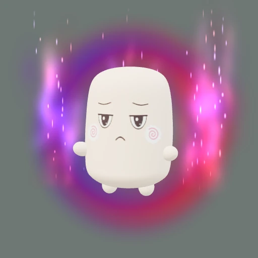
赤と紫の鮮やかな光が広がるオーラ。能力値を底上げしながら、戦いの始めは受けるダメージも和らげます。最初の攻防を落ち着いて乗り切りたいときに、試してみましょう。
「指定区域Z(玉座)」で出会う、大獣主から入手するチャンスがあります。
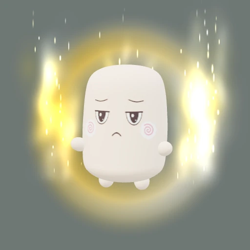
白と黄色の光が混ざる、ひときわ華やかなオーラ。おこていゆの能力値を底上げしながら、相手チームの気の力を弱めます。気を使う相手への備えとして試してみましょう。
神聖な森の「聖天の棲家」で出会う、ホーリーホワイトドラゴンペガサスから入手するチャンスがあります。
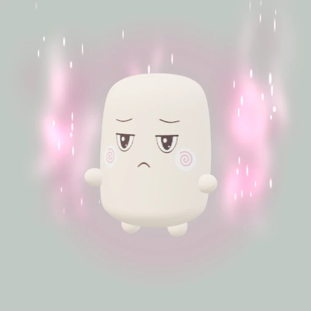
ピンクの光。モアイの戦士・金モアイ以外の相手への攻撃を強めます。
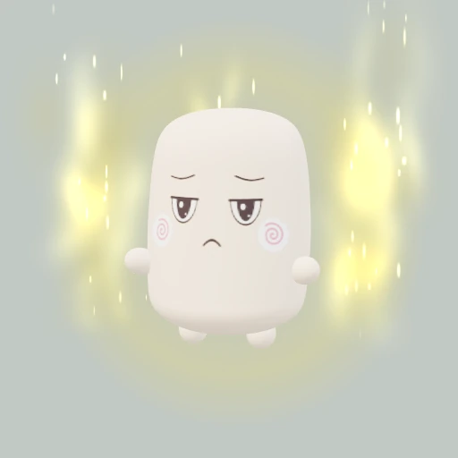
黄色の光。自分より身長が大きい相手からのダメージを軽くしてくれます。

いつもの白い光で、基礎の力を広く支えます。
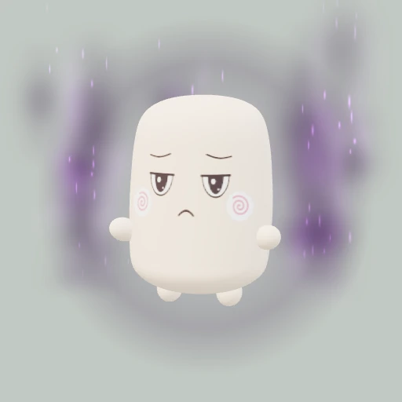
この珍生物の特徴を力に変えるオーラ。どんな冒険のおともに合うか、装備して確かめてみましょう。
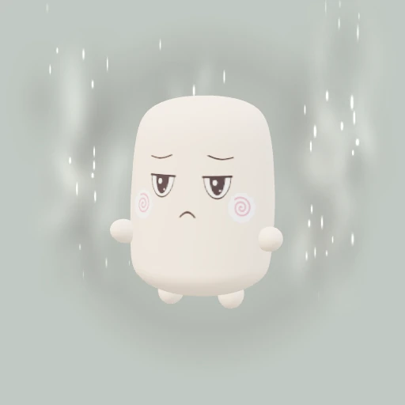
この珍生物の特徴を力に変えるオーラ。どんな冒険のおともに合うか、装備して確かめてみましょう。

この珍生物の特徴を力に変えるオーラ。どんな冒険のおともに合うか、装備して確かめてみましょう。

この珍生物の特徴を力に変えるオーラ。どんな冒険のおともに合うか、装備して確かめてみましょう。

この珍生物の特徴を力に変えるオーラ。どんな冒険のおともに合うか、装備して確かめてみましょう。
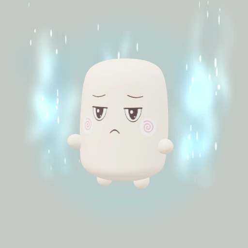
この珍生物の特徴を力に変えるオーラ。どんな冒険のおともに合うか、装備して確かめてみましょう。

この珍生物の特徴を力に変えるオーラ。どんな冒険のおともに合うか、装備して確かめてみましょう。

この珍生物の特徴を力に変えるオーラ。どんな冒険のおともに合うか、装備して確かめてみましょう。
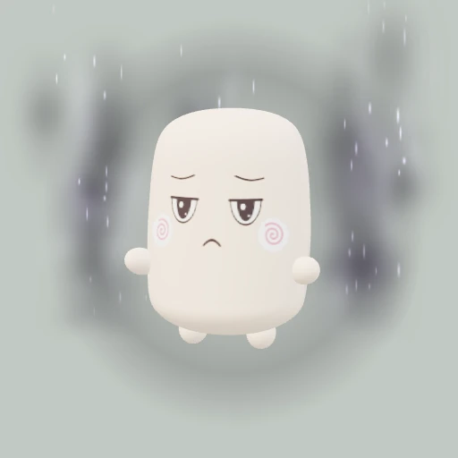
この珍生物の特徴を力に変えるオーラ。どんな冒険のおともに合うか、装備して確かめてみましょう。
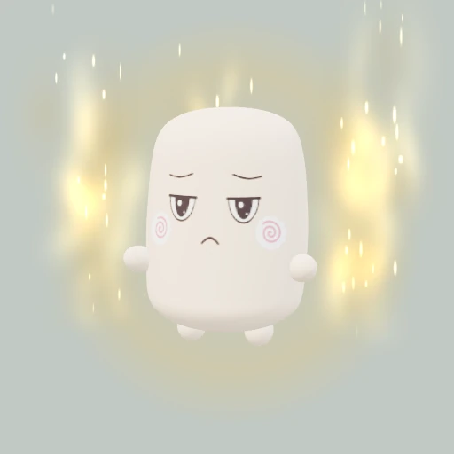
この珍生物の特徴を力に変えるオーラ。どんな冒険のおともに合うか、装備して確かめてみましょう。

この珍生物の特徴を力に変えるオーラ。どんな冒険のおともに合うか、装備して確かめてみましょう。
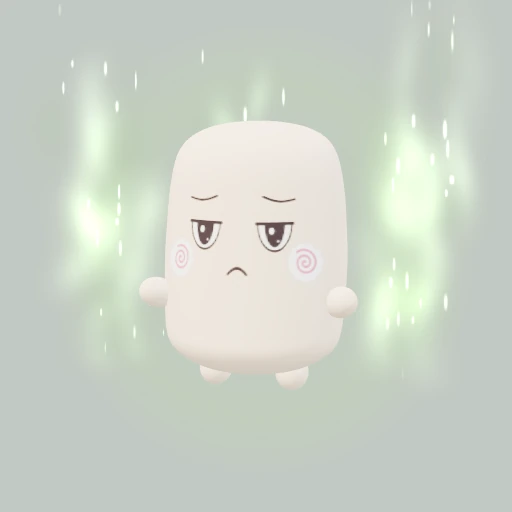
薄い緑の光をまとい、能力値を底上げするオーラ。どんな冒険のおともに合うか、装備して確かめてみましょう。
追加効果なし
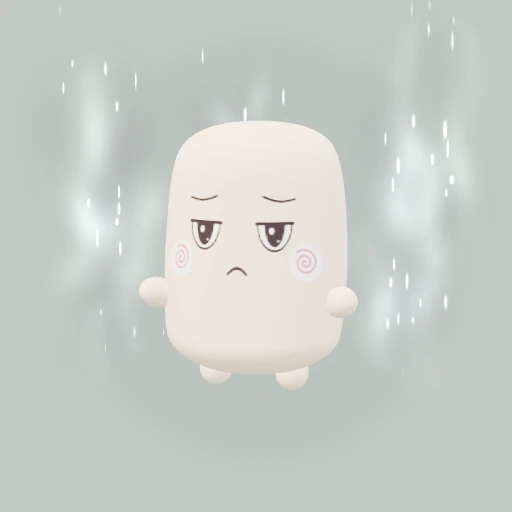
灰色の光をまとい、能力値を底上げするオーラ。どんな冒険のおともに合うか、装備して確かめてみましょう。
追加効果なし

黄色い光をまとい、能力値を底上げするオーラ。どんな冒険のおともに合うか、装備して確かめてみましょう。
追加効果なし
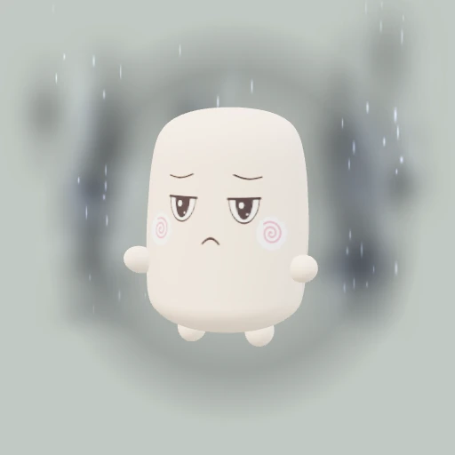
黒い光をまとい、能力値を底上げするオーラ。どんな冒険のおともに合うか、装備して確かめてみましょう。
追加効果なし
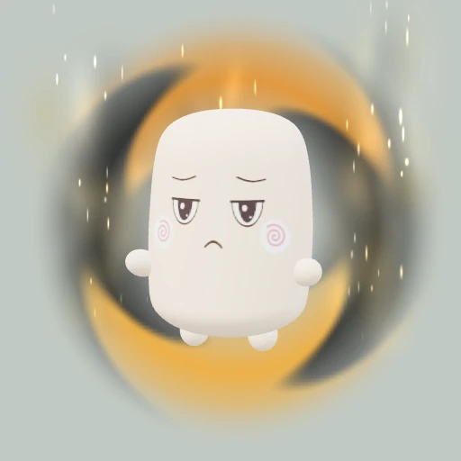
金と黒が混ざった光をまとい、能力値を底上げするオーラ。どんな冒険のおともに合うか、装備して確かめてみましょう。
追加効果なし
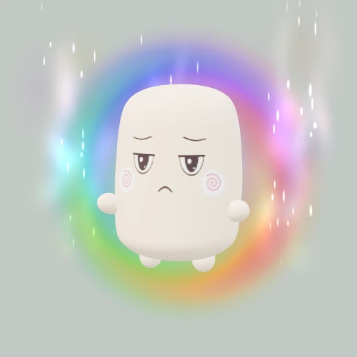
虹色の光をまとい、能力値を底上げするオーラ。どんな冒険のおともに合うか、装備して確かめてみましょう。
追加効果なし
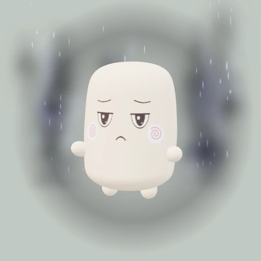
存在感のある黒い光をまとい、能力値を底上げするオーラ。どんな冒険のおともに合うか、装備して確かめてみましょう。
追加効果なし
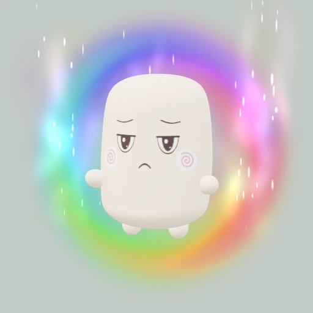
華やかな虹色の光をまとい、能力値を底上げするオーラ。どんな冒険のおともに合うか、装備して確かめてみましょう。
追加効果なし
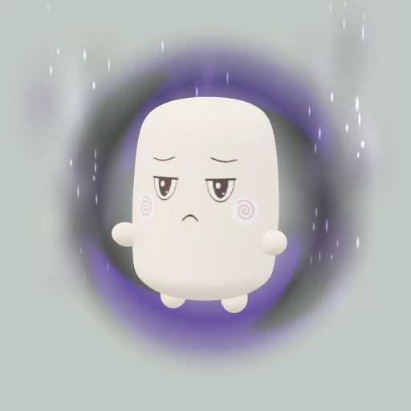
紫と黒が混ざった光をまとい、能力値を底上げするオーラ。どんな冒険のおともに合うか、装備して確かめてみましょう。
追加効果なし
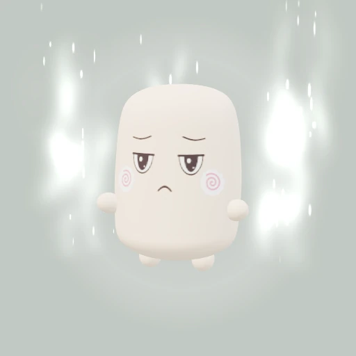
白い光をまとい、能力値を底上げするオーラ。追加効果で、相手に与えるダメージも少し高めてくれます。
新人くん自身が持つ「最初の一撃を強める力」は、このオーラの効果には含まれません。

黄色い光をまとい、能力値を底上げするオーラ。オーラをまとった珍生物の相手チームに、同じ種類の珍生物が2体以上、まだ元気にしているときは、その相手チームのどの珍生物への攻撃も後押ししてくれます。
ミニ象自身がまとう白黒の光や、ミニ象の味方チームにいる他のミニ象と守り合う力とは別の効果です。
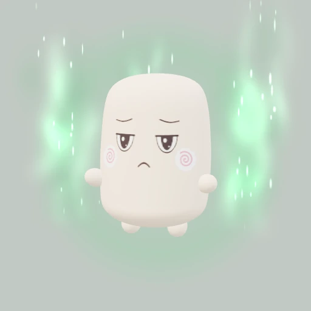
やわらかな緑の光で、能力値を底上げするオーラ。キャンプの奥で出会う大妖精との戦いで、手に入ることがあります。
大妖精自身がもつ、受けるダメージを和らげる力とは別のものです。追加効果はありません。
キャンプに持っていく物資は、出発前にバッグへ詰めましょう。現在はどのキャンプ道具も無限に所持しているので、バッグの空きマスに合わせて自由に組み合わせられます。使い方の全体は、キャンプの手引きで紹介しています。
ルート誘導／バッグの大きさ：2×2マス
神聖な森の「聖天の棲家」へ、探索道具と携帯食料の消費が少ない探索最適経路を案内します。まだ訪れていない棲家への道案内にも使えます。全行程分の物資がそろっていなくても、今ある物資で進めるところまで案内してくれます。
初めて棲家を発見するには、この古文書をバッグに入れたキャンプで、その地点まで到達しましょう。持っているだけでは解放されず、古文書なしでその場所に着いても棲家は現れません。一度発見すると記録が残り、次のキャンプからは古文書なしでも目標に選んで訪れられます。
「目標」の設定が自動で変わることはありません。棲家に着くと、そのキャンプ中の案内はおしまい。設定中の目標に沿って探索を続け、目標が「なし」なら通常の探索に戻ります。
案内に沿った次の道へ進めなくなったら、そのキャンプ中の案内はそこでおしまい。選んだ「目標」自体は変わりませんが、その後は「目標なし」のときと同じ探し方で探索を続けます。
モアイコンパスなど、ルート誘導の道具を合わせて持ち込めるのは1個だけ。行き先に合わせて選んでみましょう。
ちゃぶ台の食べ物や飲み物を味わうのも、おこていゆの楽しみ。冷蔵庫には冒険に備えた食べ物が入っています。
焼いたベーコン、パン、ハンバーグ、プリン。飲み物はコップのソーダと、ストロー付きのソーダがあります。つかんで食べたり、フォークやスプーンを使ったりする様子も眺めてみてください。
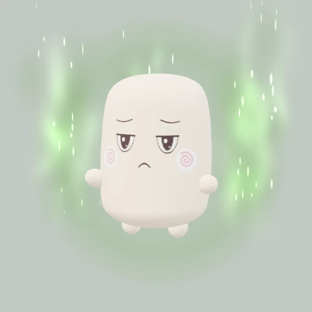
緑色のオーラ。能力値を底上げします。追加効果はありません。
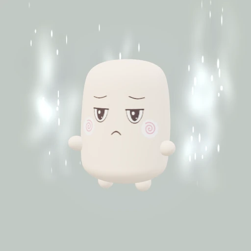
銀色のオーラ。能力値を高めながら、相手が体を使って放つ攻撃を弱めます。
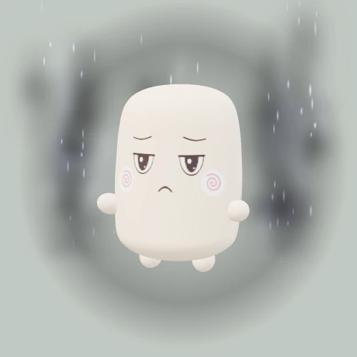
どす黒いオーラ。戦いの始めに選ばれた相手の力に応じて、おこていゆの能力値をさらに高めます。
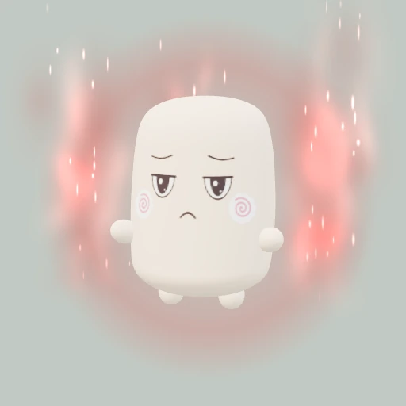
赤く輝くオーラ。それぞれ独立して集めて育てられ、能力値を底上げします。追加効果はありません。
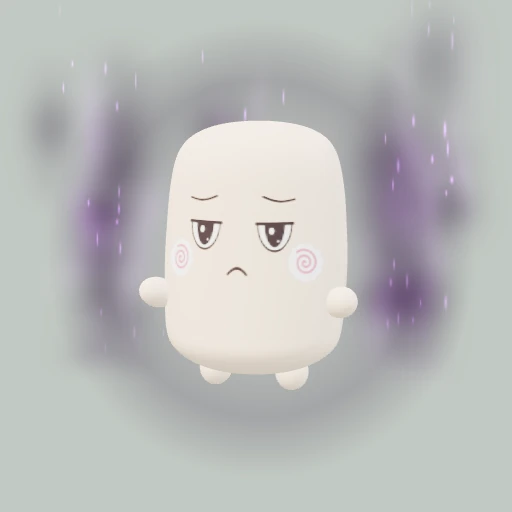
黒紫色のオーラ。それぞれ独立して集めて育てられ、能力値を底上げします。追加効果はありません。
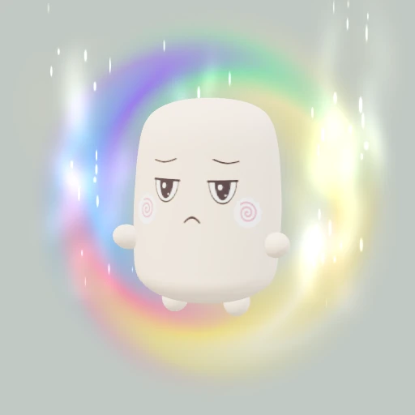
白っぽい黄色の光に、虹のきらめきが混ざるオーラ。それぞれ独立して集めて育てられ、能力値を底上げします。追加効果はありません。
キャンプの険しい火山・隕石跡地・暗黒域・神聖な森で出会うドラゴンたちから、別々のオーラを集められます。

赤と橙の光を重ねた、華やかなオーラ。それぞれ独立して集めて育てられ、能力値を底上げします。追加効果はありません。

赤と黒紫の光を重ねた、華やかなオーラ。それぞれ独立して集めて育てられ、能力値を底上げします。追加効果はありません。

赤・白っぽい黄色と虹の光を重ねた、華やかなオーラ。それぞれ独立して集めて育てられ、能力値を底上げします。追加効果はありません。
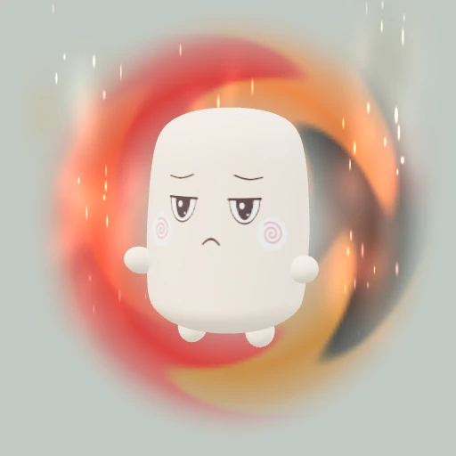
元の黒と金の輝きに、赤の光を重ねたオーラ。それぞれ独立して集めて育てられ、能力値を底上げします。追加効果はありません。
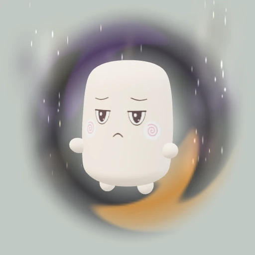
元の黒と金の輝きに、黒紫の光を重ねたオーラ。それぞれ独立して集めて育てられ、能力値を底上げします。追加効果はありません。
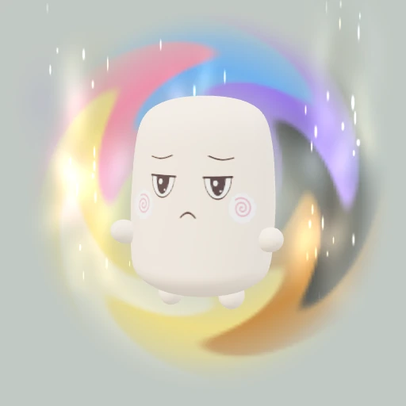
元の黒と金の輝きに、白っぽい黄色に虹のエフェクトの光を重ねたオーラ。それぞれ独立して集めて育てられ、能力値を底上げします。追加効果はありません。
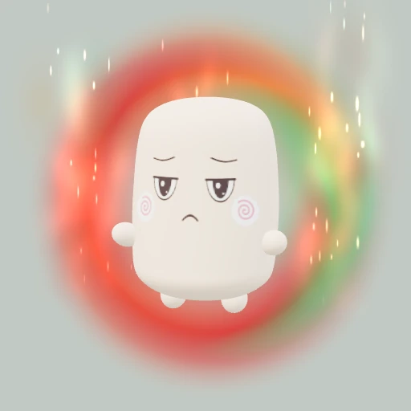
元の色に赤の光を重ねたオーラ。個別に集めて育てられ、能力値を底上げします。追加効果はありません。
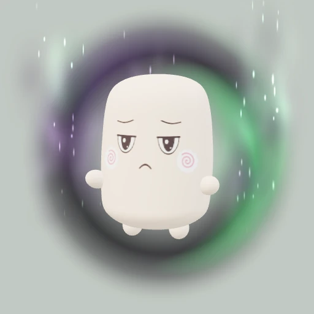
元の色に黒紫の光を重ねたオーラ。個別に集めて育てられ、能力値を底上げします。追加効果はありません。
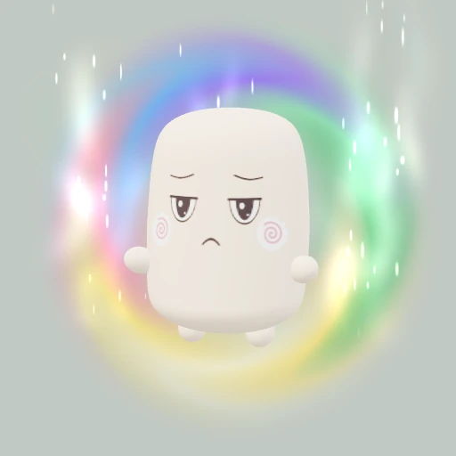
元の色に白っぽい黄色に虹のエフェクトの光を重ねたオーラ。個別に集めて育てられ、能力値を底上げします。追加効果はありません。
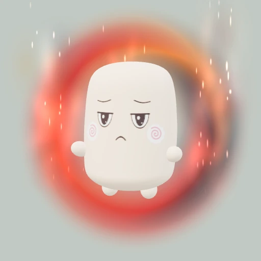
元の色に赤の光を重ねたオーラ。個別に集めて育てられ、能力値を底上げします。追加効果はありません。
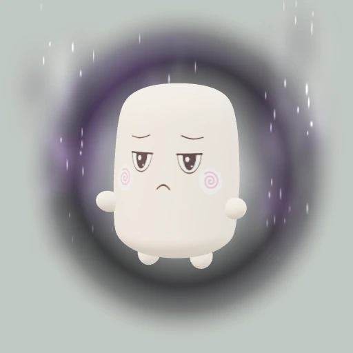
元の色に黒紫の光を重ねたオーラ。個別に集めて育てられ、能力値を底上げします。追加効果はありません。
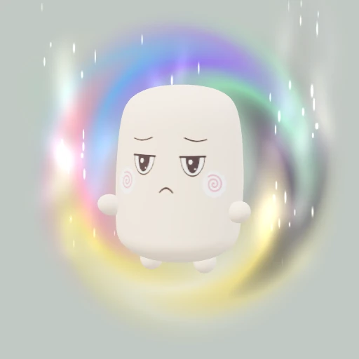
元の色に白っぽい黄色に虹のエフェクトの光を重ねたオーラ。個別に集めて育てられ、能力値を底上げします。追加効果はありません。
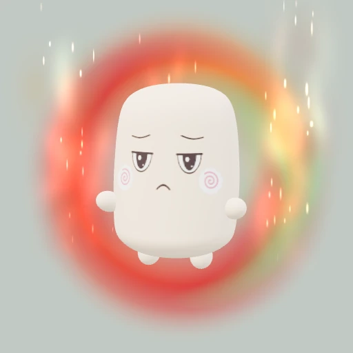
元の色に赤の光を重ねたオーラ。個別に集めて育てられ、能力値を底上げします。追加効果はありません。
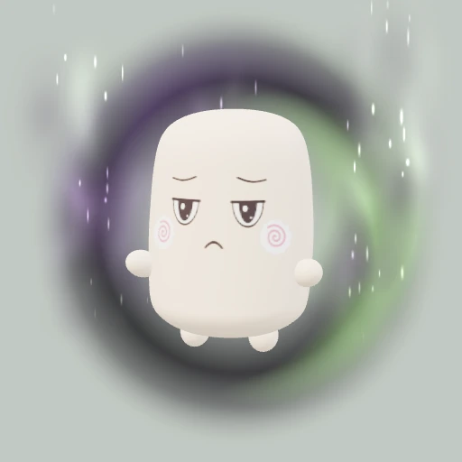
元の色に黒紫の光を重ねたオーラ。個別に集めて育てられ、能力値を底上げします。追加効果はありません。
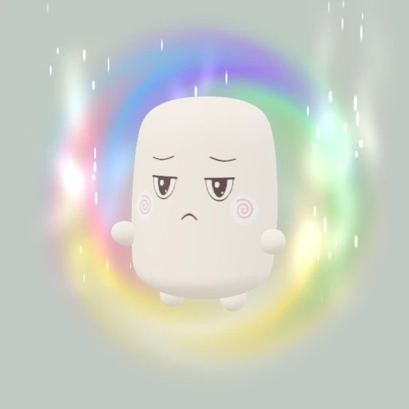
元の色に白っぽい黄色に虹のエフェクトの光を重ねたオーラ。個別に集めて育てられ、能力値を底上げします。追加効果はありません。